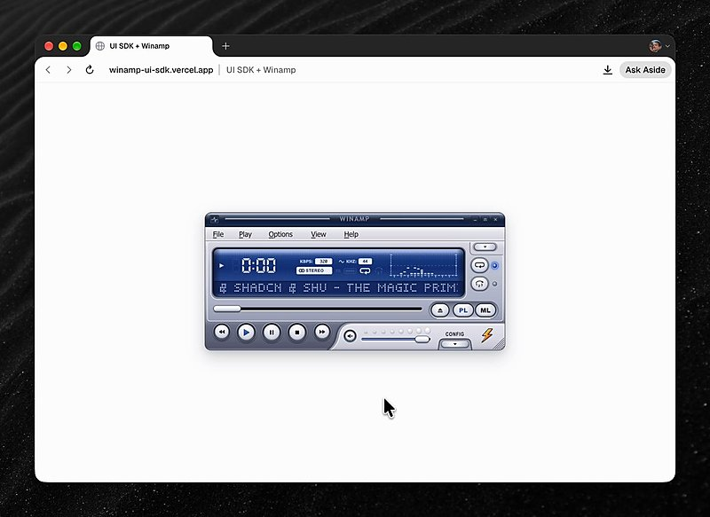
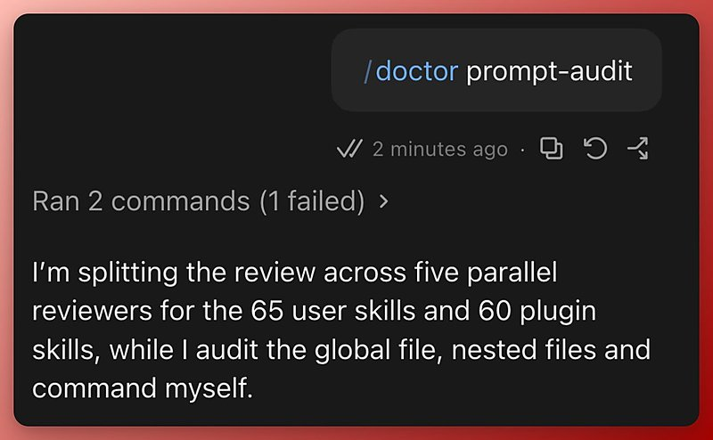

AI 日报 · 11月16日
AI 工作流进入科学证明与个人财务
OpenAI 分享 Astra 参与粒子物理证明构建，Google 开放 Gemini 读取 Wallet 消费信息；Builder 讨论界面复用、技能审计与实验公开。
科学研究
个人财务
代理界面
开源工具
5
Builder 动态
3
上榜仓库
2
官方研究与产品
今日要点
RSS 精选
周报继续追踪 AI 产业
AI前线：11 月 15 日 AI 周报
AI前线汇总前一周科技与 AI 产业消息。涉及具体事件时，仍应以原始公告核实。
已检查 feeds.json 中四个 RSS 源；目前没有 11 月 16 日的新条目。
Builder 动态
从金融分析到可复用界面
Josh Woodward｜Gemini 接入 Wallet 交易信息
Google Gemini 负责人介绍，用户可连接 Google Wallet，按个人支出生成图表、识别订阅涨价并制定预算。美国 Gemini 用户可先使用；这是读取与分析能力，不涉及转账。
Guillermo Rauch｜代理复用界面行为
Vercel CEO 分享使用 fx、Gemini Argon 与 UI SDK 构建 Web Components 的体验，称代理复用了 14 项现成界面行为；数字来自其个人示例。

Peter Yang｜用提示词审计开发环境
Peter Yang 分享两个用于检查 Claude Code 配置和单项 skill 的提示词，并建议新模型发布后检查现有工作流程。

Thibault Sottiaux｜征集 Daybreak 反馈
OpenAI 的 Thibault Sottiaux 邀请用户反馈 Daybreak 的模型、Codex 插件、红蓝队访问、文档与防御工厂等环节；原帖是意见征集。
Dan Shipper｜公开前沿实验记录
Every CEO 介绍团队的 frontier feed：公开 AI 实验的代码和简短记录，供读者复现与借鉴。
GitHub Trending
办公组件、设计技能与代理审阅
11 月 16 日 GitHub Trending 页面快照；星标和 Fork 数按抓取时 GitHub API 返回值记录。
今日思考
Gemini 的 Wallet 连接强调只读分析；OpenAI 的科研案例强调候选证明仍需检验。产品和研究都需要清楚标明 AI 做了什么、没有做什么。
参考来源